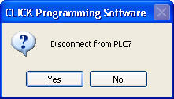

Topic: CL086

| Disconnect |
Topic: CL086
|
Select Disconnect to cease communications with the CLICK PLC. Disconnect is available in several locations within the CLICK Programming Software application, but it is only available when the PLC is currently Connected to the PC. Closing the active Project also Disconnects the PLC from the PC. When you select Disconnect, you will see a confirmation dialog, but when you select Close Project, the confirmation dialog does not appear.

When you select Disconnect, you will receive a confirmation dialog like the one below.
